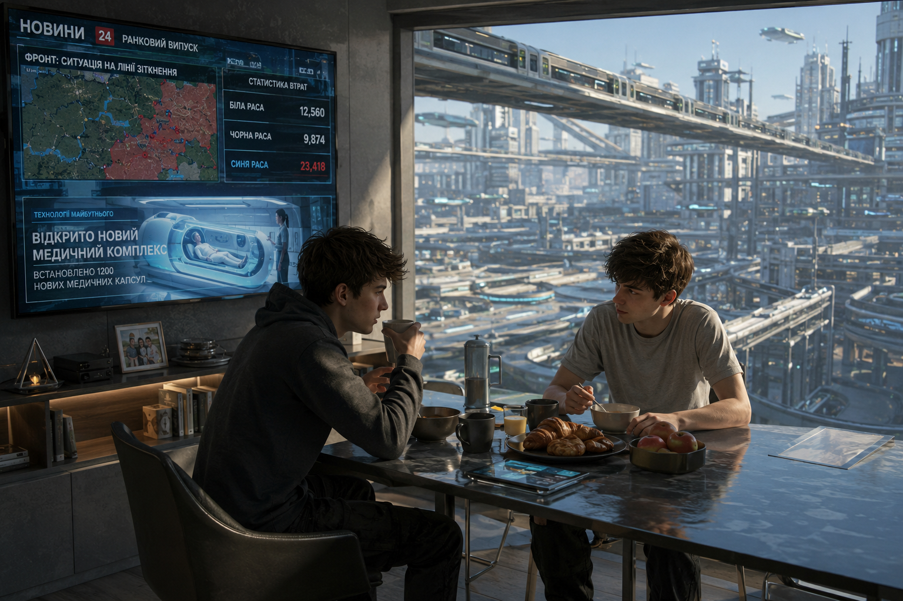

Chapter 1. Two Brothers

Nayrin and his younger brother Zairin live together in a technologically advanced world of city-paths after losing their parents. Their ordinary life ends when the Blue race launches a massive nuclear attack. While trying to reach shelter, the brothers are separated, and Nayrin finds himself far from his home world.
Read the full chapter
Loading chapter…